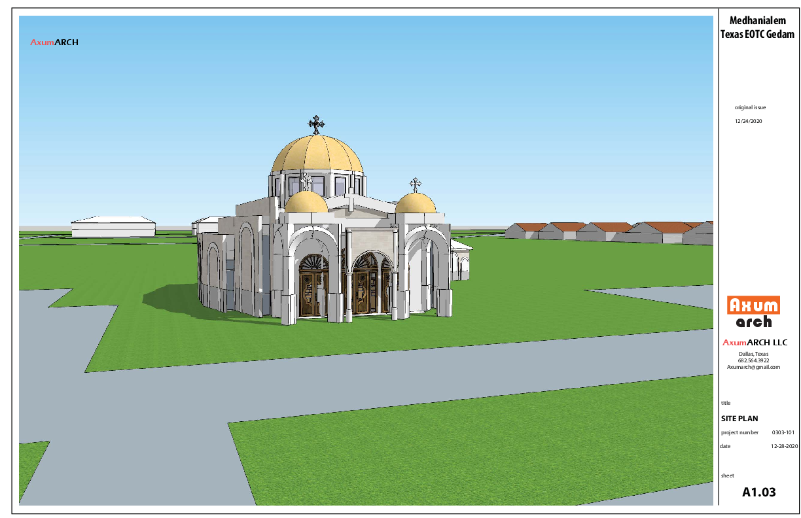

Church and prayer space
A central liturgical space for worship, prayer, and the life of the monastery community.
Now that land has been purchased, this page should function less like a speculative “future construction” board and more like a real construction-vision page. It should explain what will be built, what has to happen first, and why construction-stage giving matters right now.

Site Vision Overview

Planning Detail

Expanded Grounds Concept
A central liturgical space for worship, prayer, and the life of the monastery community.
Areas for teaching, fellowship, events, and welcoming supporters, families, and pilgrims.
Site access, utilities, support buildings, and the groundwork needed for long-term campus growth.